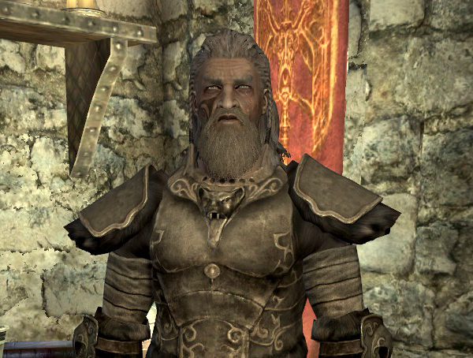
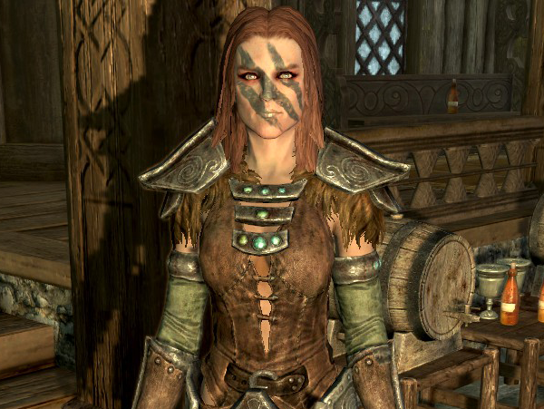
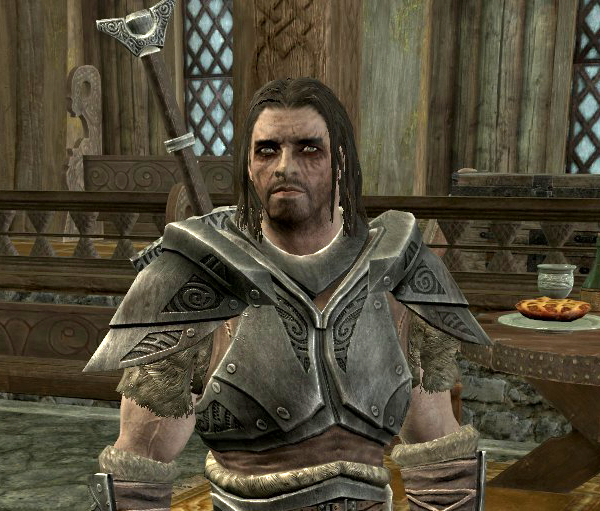
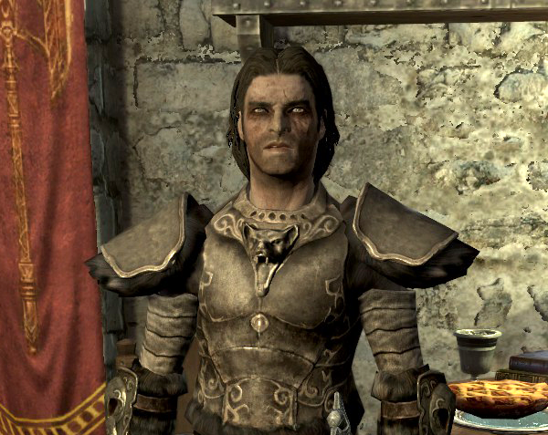
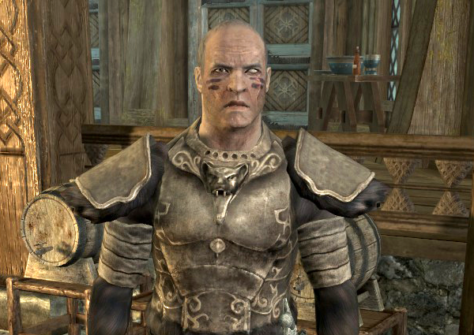
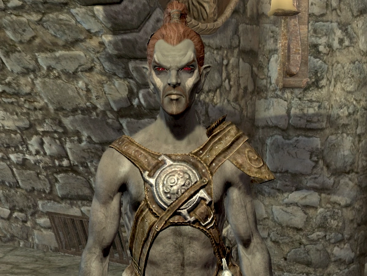
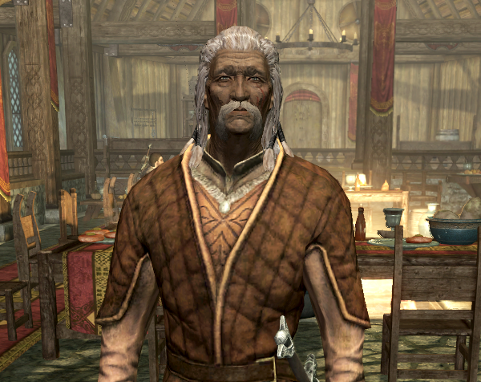
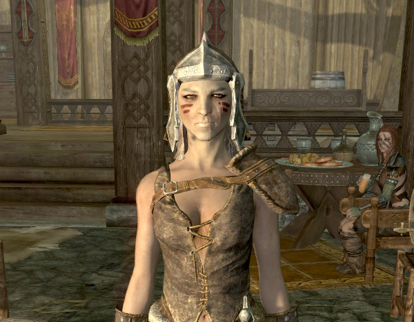
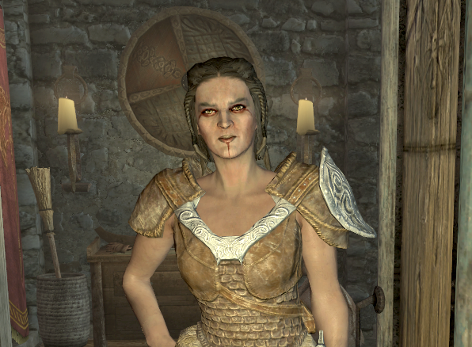
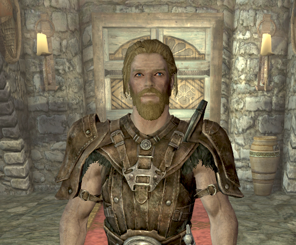

Current members of the Companions
Kodlak Whitemane
Kodlak Whitemane is the Harbinger of the Companions in Whiterun. He has commanded the Companions for twenty years, balancing his tactical skill, ferocity in combat, and commanding presence. As Harbinger, he is the one that helps channel the Companions' skills in a way that can benefit Skyrim's people, rather than leaving them to brawl and drink all day long. His wisdom is respected throughout the nine holds, as well.
Aela the Huntress
Aela is one of five members of The Circle, residing in Jorrvaskr with the other Companions. She is an expert level archery trainer. All of the women in her family were once also members of the Companions.
Farkas
Farkas is a member of The Circle and is one of the most formidable and experienced warriors in the Companions. Like the rest of the Companions, he lives in Jorrvaskr in the Wind District of Whiterun. He is a Master-level trainer in Heavy Armor. Farkas and his twin brother Vilkas were raised at Jorrvaskr after being rescued from a circle of necromancers.
Vilkas
Vilkas is the Master at Arms of the Companions and a member of the Circle. He is the most formidable and experienced of their warriors. He is a Master-level trainer in two-handed weaponry. As Master at Arms, Vilkas is in charge of training the younger members in weapon combat. He has a reputation of being hard on his students but is an excellent teacher.
Skjor
Skjor is a Nordic member of the Companions and one of The Circle. He is one of the highest-ranked members of The Circle, quite possibly next to Kodlak Whitemane. Before becoming a Companion, he fought in the Great War against the Third Aldmeri Dominion before becoming critically injured in the fighting. After he recovered from his injuries, he became a sellsword for hire across Skyrim, and eventually joined the Companions.
Athis
Athis is a Dunmer warrior and a member of The Companions. He resides in The Companions' mead hall, Jorrvaskr, in Whiterun. He is an Expert-level trainer in One-handed combat, and is also the only Dunmer among the current ranks of the Companions. Athis originally came from Morrowind, mentioning that he had to "crawl out" of the province. After an unknown amount of time, he joined the Companions.
Vignar Gray-Mane
Vignar Gray-Mane, also known as Vignar the Revered, is an elderly Nord member of the Gray-Mane clan in Whiterun. He is a supporter of the Stormcloaks and respected figure in the city. Vignar claims to have been a great warrior long ago and joined the Companions sometime in his youth. He seems to be the oldest member of The Companions; Kodlak suggests that he witnessed the rise and fall of about half a dozen Harbingers.
Njada Stonearm
Njada Stonearm is a Nord and a member of the Companions. She can be found within the Companions' headquarters, Jorrvaskr, in Whiterun. She is an Expert-level trainer in Block. Njada has an unpleasant attitude and uncaring disposition. She has few friends, which is what she prefers.
Ria
Ria is the newest member of The Companions. She is also the only Imperial currently in the ranks. She resides in Whiterun, and can be found within or just behind Jorrvaskr. Ria states she has dreamed of being a Companion since she was a little girl, and is very enthusiastic about her membership. She is determined to fight and die alongside her Shield-Siblings.
Torvar
Torvar is a Nord warrior, and a member of the Companions who resides within Jorrvaskr in Whiterun. He is one of the Companions' newer members. He doesn't take well to the intensive training, and argues with Farkas about not being allowed to go out and fight.